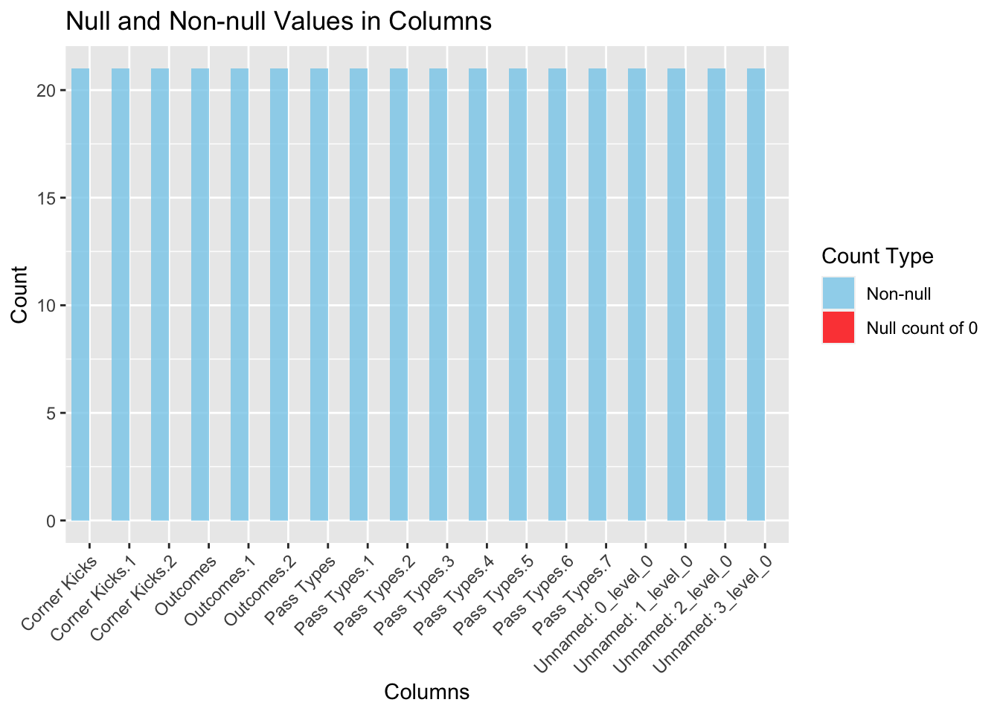
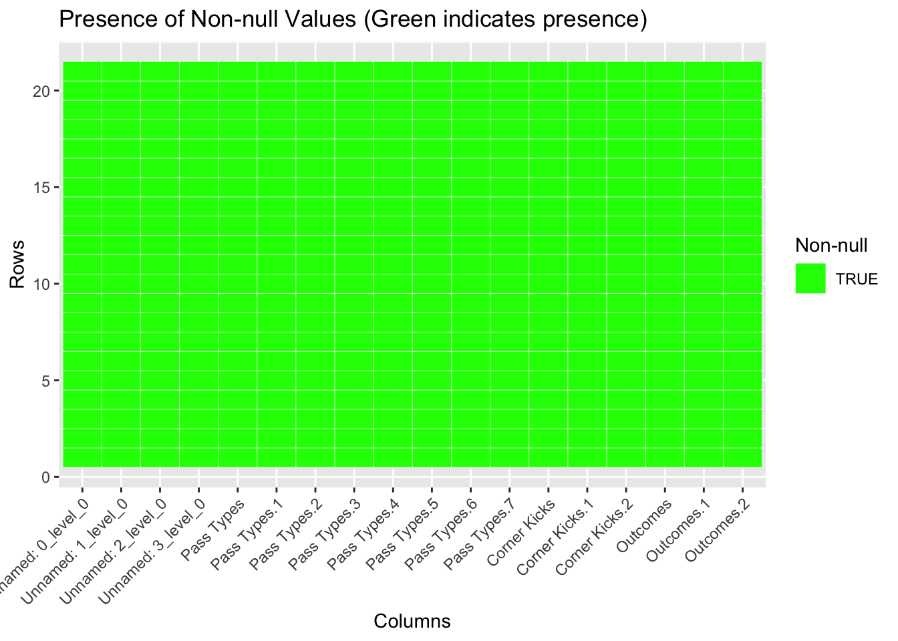

Data Description: Technical, Research Approach and Missing Value Analysis
2.1 Description
2.1 Technical Description
Given the popularity of the sport and its apex league, it is not surprising to see the manifold sources which can be used to book-keep the data of the Premier League and its individual fixtures. Some popular sources are:
Premier League Official Website: The official Premier League website offers statistics, fixtures, results, and historical data. While it might not provide APIs, the website itself is a good reference for up-to-date information.
Football Data APIs: o Opta: Opta provides detailed sports data, including football. They offer APIs that cover various football leagues, including the Premier League, delivering statistics, match events, player data, and more.
o Sportradar: Sportradar offers APIs with live and historical data for various sports, including football. Their services cover detailed match data, player statistics, and more for the Premier League.
Statistical Websites: o Whoscored: Whoscored provides detailed statistics, including player ratings, team performance, and match data for various football leagues, including the Premier League.
o Transfermarkt: While primarily known for transfer-related data, Transfermarkt also offers comprehensive statistics, player information, and historical data for the Premier League.
Open Source Datasets: o GitHub Datasets: Some repositories on GitHub host curated football datasets, including Premier League data. You can find historical match results, player statistics, and more.
API Platforms: o RapidAPI: Platforms like RapidAPI aggregate multiple APIs, including sports data providers. You can find football-related APIs on RapidAPI that cover the Premier League.
For the purpose of this project, we have taken into consideration the previous season of the Premier League (Season 2022/23) which concluded in May. This will allow us to perform in -depth analysis of an entire season.
SOURCES USED:
Source 1: Football Referee (https://fbref.com/en/comps/9/2022-2023/2022-2023-Premier-League-Stats)
Description: The dataset consists detailed records of the recently concluded 22/23 season of the English Premier League. It includes various metrics like possession, goalkeeping, playmaking, passing, etc and provides information from a twofold perspective (squad and v/s the squad). Provides ample opportunities for different observations using all kinds of graphs and plots.
Format: Excel Sheets (.xlsx) and Comma Separated Values (.csv) files. Frequency of Updates: Every Match-Week. (Note: Since we have taken into account the last season, there will be no additions or changes to the dataset used. The ‘weekly’ frequency refers to the usual timeline of football matches in the English Premier League held usually held every Saturday & Sunday, with exceptions being International Breaks, Emergencies and off-season breaks.)
Dimensions: 20 X 15 (Each sheet consists of different number of columns, depending on the aspect of the game it records. 15 is just a rough estimate of how many features may be present in each. The teams, however, stay the same and hence all sheets have 20 rows.)
Other relevant information: For the uninitiated, certain terms commonly used in Football (or Soccer, in America) might feel like jargon. Hence, one can find the “glossary” section in the source link itself to better understand the meaning & full forms of abbreviations used as column names.
Potential Shortcomings of the dataset: 1. No categorical variables as such – All features are of numerical datatypes. This is a nature of the sport itself, which demands limited ‘categorical’ input for analysis. 2. Needs Pre-processing and Cleaning - Data is spread into 23 different sheets (each acting as a dataset on its own) 3. Limited Size – The dataset consists of only 20 rows in each sheet, representing all 20 teams. This is different from a usual csv file which might consist millions of rows of data.
Source 2: Official Website of the Premier League (https://www.premierleague.com/)
This is the official website of the English Premier League and acts as the official platform for all news, stats and records of the league. We primarily plan to use this as a ‘fact-check’ source to ensure the data represented on the third party source is authentic and not fabricated. Besides, the website also contains information not relevant to the purpose of our assignment.
External Sources which might possible aid our research question (Financial Aspects) - https://www.transfermarkt.us/
2.2 Research Plan
2.2 Research plan
The research question we’re primarily trying to answer is – “What makes a Premier League Champion?” Analyzing a Premier League dataset to understand the key factors that contribute to a team becoming a champion involves exploring various aspects of the game. Here’s a detailed approach:
Performance Metrics: Goals Scored and Conceded. Explore the relationship between a team’s goal-scoring ability and defensive solidity. Champions often have a high goal-scoring rate coupled with a solid defense. Possible Graphs – Line Chart, Bar Chart.
Possession and Style of Play: Possession Statistics: Examine possession stats to understand if champions tend to dominate possession or are effective in counter-attacking. Passing Accuracy and Style: Analyze passing accuracy and patterns to determine if champions have a particular style of play (possession-based, direct play, etc.) Possible Graphs – Area Chart, Heatmap.
Efficiency and Expected Goals (xG): Expected Goals (xG): Evaluate expected goals statistics to gauge a team’s offensive efficiency. Compare actual goals scored to expected goals to identify teams that overperform or underperform based on expected metrics. Possible Graphs - Scatter Plot, Line Chart.
Defensive Strength: Clean Sheets and Goals Conceded: Assess the number of clean sheets and goals conceded by champions. A strong defense is often a crucial factor in winning the title. Possible Graphs - Bar Chart/ Line Chart.
Individual Player Performance: Key Player Contributions: Analyze individual player statistics such as top goal scorers, assists, key passes, successful tackles, interceptions, etc., to identify the impact of star players on the team’s success. Possible Graphs – Bar Chart, Radar Chart. Additional Data from the same source (FBRef) will be required for individual player analysis*
Goalkeeping Performance: Goalkeeper Stats: Evaluate goalkeeper statistics such as save percentage, clean sheets, saves made, etc., to understand the influence of goalkeeping on the team’s success. Possible Graphs - Bar Chart or Pie Chart. Illustrating goalkeeper statistics like save percentage, clean sheets, saves made, etc., for different goalkeepers.
Tackles Won and Defensive Actions: Tackles and Defensive Stats: Assess the number of tackles won, interceptions, blocks, clearances, etc., to understand a team’s defensive work rate and effectiveness.Possible Graphs - Bar Chart or Area Chart: Displaying tackles won, interceptions, blocks, clearances, etc., to showcase defensive actions.
Consistency and Form: Home vs. Away Performance: Analyze a team’s performance at home versus away games to understand consistency. Form Across the Season: Check for streaks, runs of consecutive wins, and periods of good form to identify critical phases of the season for champions. Plot: Line Chart/ Area Chart
Match Analysis: Results Against Top Teams: Analyze results against direct competitors or top teams to understand the team’s performance in crucial matches. Performance in Critical Fixtures: Evaluate performance in high-pressure matches towards the end of the season. Plot: Line/Bar Chart
By dissecting and analyzing various facets of the dataset as mentioned above, we can uncover patterns and trends that distinguish championship-winning teams in the Premier League. Integrating multiple metrics and adopting a holistic approach will provide a comprehensive understanding of our research question - What makes a Premier League champion?
The following object is masked from 'package:tidyr':
smiths
Code
# read data and print null counts for each field in datafile_path <-"EPL (Names).xlsx"data <-read_excel(file_path)count_null_values <-function(df) {colSums(is.na(df))}null_counts <-count_null_values(data)print(null_counts)
# bar plot of null vs non null counts by fieldnon_null_counts <-colSums(!is.na(data))plot_data <-data.frame(columns =names(non_null_counts),counts = non_null_counts,null_counts_0 = non_null_counts ==0)plot_data_gathered <- plot_data %>%gather(key ="value_type", value ="count", -columns)ggplot(plot_data_gathered, aes(x = columns, y = count, fill = value_type)) +geom_bar(stat ="identity", position ="dodge", alpha =0.8) +scale_fill_manual(values =c("counts"="skyblue", "null_counts_0"="red"), name ="Count Type",labels =c("Non-null", "Null count of 0")) +labs(x ="Columns", y ="Count", title ="Null and Non-null Values in Columns") +theme(axis.text.x =element_text(angle =45, hjust =1))

Code
# heatmap of non null valuesnon_null_matrix <-!is.na(data)non_null_df <-melt(non_null_matrix)ggplot(non_null_df, aes(x = Var2, y = Var1, fill = value)) +geom_tile(color ="white") +scale_fill_manual(values =c("TRUE"="green", "FALSE"="red", "NA"="red"), name ="Non-null",na.value ="NA color") +labs(x ="Columns", y ="Rows", title ="Presence of Non-null Values (Green indicates presence)") +theme(axis.text.x =element_text(angle =45, hjust =1))

Note: Certain Unnamed columns still exist which will be treated in the pre-processing stages.
The above plots show that we did not observe any null values at all. We found a collection of many different datasets all relating to the teams in the premier league. Then we were able to join together some of the important attributes in the tables. This joined dataset we created is what we searched for null values in, and we found none.